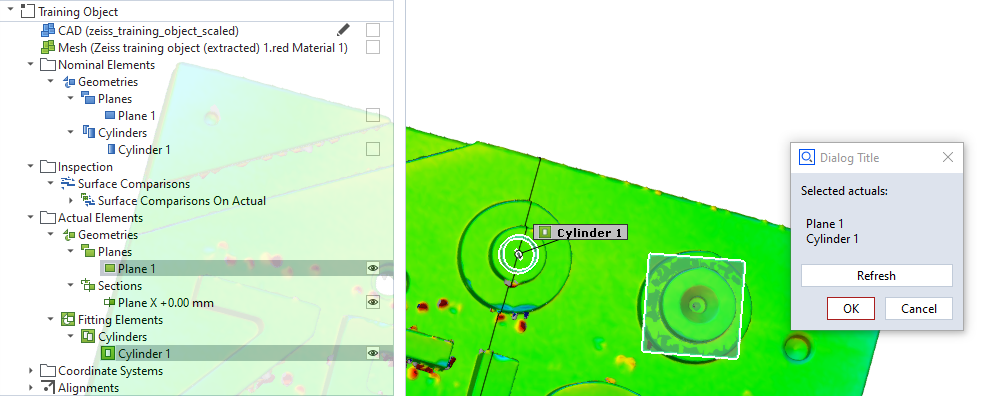
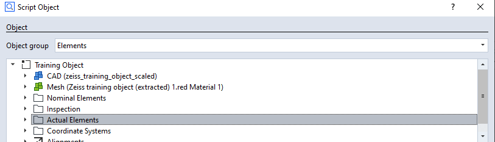

explorer_selected_elements_in_dialog

Short description
Sometimes you might want to get the list of elements currently selected in the element explorer. This example shows how to do so, e.g. in a script dialog.
Highlights
You can get all elements of a certain category by using a gom.ElementSelection. Then you can iterate over this list to check which ones are currently selected.
actual_elements = gom.ElementSelection ({'category': ['key', 'elements', 'part', gom.app.project.parts['Training Object'], 'explorer_category', 'actual']})
selected_actuals = [element.name for element in actual_elements if element.is_selected]
Hint
As the gom.ElementSelections get pretty lengthy, it is advised to generate these expressions using the “Script Object” explorer (F2). Select a category of elements and directly click “OK” to insert a corresponding selection expression.

In the example, an exemplary selection of elements is also triggered by the script:
example_selection = [gom.app.project.actual_elements['Plane 1'], gom.app.project.actual_elements['Plane X +0.00 mm']]
gom.script.explorer.apply_selection (selection=example_selection)